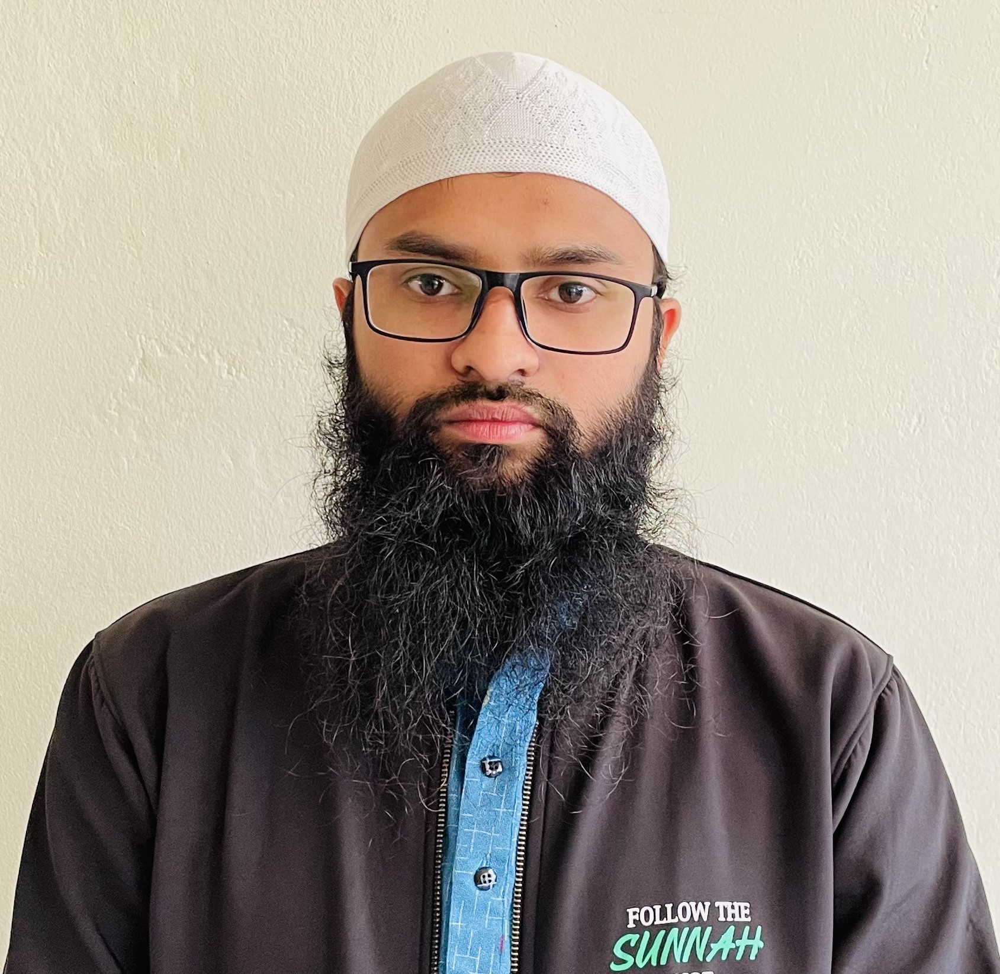

contact info
mdamransarker.kuet.mse@gmail.com
+88017-09692186
Gaibandha, Bangladesh
Github account
LinkedIn Account
.

I am Md. Amran Sarker. Currently I have compleated BSc in Materials Science and Engineering at Khulna University of Engineering & Technology.I’m enthusiastic, energetic and highly motivated person who has a good track record in academics and other sector.
I have passed SSC exam with a gpa of 5.00 out of 5.00
I have passed SSC exam with a gpa of 5.00 out of 5.00
I have completed my BSc in MSE with a CGPA 3.87 out of 4.00
BIOVIA Materials Studio CASTEP is an ab initio quantum mechanical program employing density functional theory(DFT).
A course offers advanced analysis tools and Apps for Peak Fitting, Surface Fitting, Statistics and Signal Processing.
SCAPS 1D is a simulation programme for thin film solar cells developed at ELIS, University of Gent.
In recognition of excellent performance (GPA of 3.75 or above) in two regular terms of an academic year, this award is given by Khulna University of Engineering & Technology.
In recognition of excellent performance (GPA of 3.75 or above) in two regular terms of an academic year, this award is given by Khulna University of Engineering & Technology.
1. Analyzing structural stability of a compound upon applying pressure and doping
2. Determining the structural, electrical, optical, thermal and mechanical properties
3. Tuning the band gap of compounds by inducing hydrostatic pressure or doping in order to make them suitable for optoelectronic devices and solar cell applications
1. Renewable energy
2. Energy storage system
3. Energy conversion
3. Material Synthesis and characterization
4. Composite
5. Extractive metallurgy
6. Computational material science
7. Surface coating for energy applications
Had a full overview of casting process (runner and gate design, melting, pouring).
1. Had a full overview of charging, electrode and assembly unit.
2. Observed the way they manufacture Pb and alloyed-Pb electrodes for batteries
1. Divide the workload equally among the team members
2. Get approval from the supervisor whenever a new idea comes up
1. To improve meals of dining.
2. To discuss with provost of Hall about problems of general students
1. To arrange meals of students (Lunch, Dinner).
2. To manage dining environment.